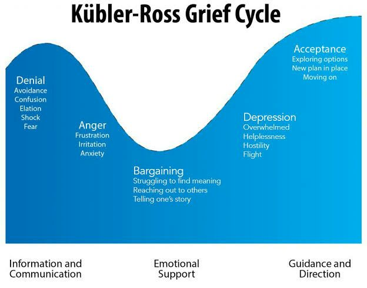

LOBOTOMY CORPORATION
"Face the fear, build the future."
Theory on the Magical Girls (and Other Abnormalities)
By Employee #13-37-04-20-69

I am Employee #13-37-04-20-69.
I have been asked by the Records Team to submit my personal musings on the five Magical Girls––Queen of Hatred, King of Greed, Knight of Despair, Servant of Wrath, and Jester of Nihil––to be kept as additional data. I don't know what my crackpot theorycrafting will do to benefit the company, but orders are orders.
My thesis is as follows: I believe that all five Magical Girls hold fundamental ties to the Kübler-Ross model of the Five Stages of Grief. Abnormalities and E.G.O.s all come from archetypes within humanity's collective unconsious. Even the most monstrous Abnormalities are fundamentally connected to us in some way. Is it really so far-fetched of me to believe this?
Anyway...my ranting aside. Each of the five Magical Girls behave in a very particular way, and what we have gleaned of their pasts supports my theory even further. I can see no doubts that I am right.
Included below are all of my findings, organized based on the individual Abnormalities to which they pertain.
The Queen of Hatred
Stage 1: Denial
Associations: Avoidance, Confusion, Elation, Shock, Fear
Queen is by far the most aggressively happy member of this troupe. She's incredibly eager to help and even leaves her own containment during other breaches, just to help us "destroy the evil." However, she appears uncertain of her role in the world, and when she doesn't "help" for a while, she begins to spiral and think she's useless and not needed anymore. Moreover, whenever an employee dies on her watch, she suffers a massive mental breakdown and turns into a giant winged snake monster. She might be slightly bipolar in this respect, with how easily she swings between happiness and sadness––but then again, I'm no psychologist. She's definitely in denial over how much she actually helps, though.
The Servant of Wrath
Stage 2: Anger
Associations: Frustration, Irritation, Anxiety
There's not much to unpack here. Servant literally turns into a berserk acid-spitting minotaur monster whenever she becomes upset. I think this one's pretty open-and-shut.
The King of Greed
Stage 3: Bargaining
Associations: Struggling to find meaning, Reaching out to others, Telling one's story
This is maybe my weakest link to the five stages. However, she HAS told us the most about herself and her past compared to her sisters. That might link up to the "Telling one's story" part. In addition, she claims to gather many things, which could be equated to "bargaining chips" at a massive stretch..or maybe it has something to do with her mentioning the Forbidden Apple given to Eve in the Garden of Eden. The snake bargaining the apple—knowledge in exchange for God’s trust? After all, the reason we were banished from the Garden was because we took that offer. We accepted the bargain, because humans are greedy. Maybe that's the connection.
The Knight of Despair
Stage 4: Depression
Associations: Overwhelmed, Hopelessness, Hostility, Flight
Knight claims to be filled with nothing but regrets for her failure to protect those she cared about. In the past, over and over, those whom she granted her skills inevitably died, and she obviously blames herself for their deaths. Every now and then, when I pass by the door to her containment, I can hear her crying. No way she isn't depressed.
The Jester of Nihil
Stage 5: Acceptance
Associations: Exploring options, New plan in place, Moving on
Nihilism is a form of acceptance, isn't it? A messed up, twisted form of it, but apathy is still accepting what's going on. Jester displays a sort of apathy to everything bad that goes on in the world, and is absolutely the least justice-minded of the five Magical Girls. In fact, Jester only shows up when the others pool their power, leading me to wonder if she's even a part of the quintet at all. Unfortunately, Jester is the one we know the least about, so maybe I'll find more connections to this theory later.
Unrelated Theories
Miscellany
The information given above is not my only theory–I have other, less polished theories as well. I will include them below for good measure, as the Records Team says there is no such thing as too much information.
On "One Sin and Hundreds of Good Deeds"
Currently, Lobotomy Corporation operates under the belief that One Sin feeds off of the sins of those that pray to it. However, I disagree. I imagine that it does not feed off of sin, but rather, faith. To confess one’s sin to another, you put your faith into that other person—so maybe the facility only saw the “sin” part and assumed that was what nourishes One Sin, which says a lot about how nearsighted the Facility can be, frankly. Divine beings like gods are sustained by the faith of their followers. It’s true for One Sin, and it’s even true for WhiteNight—how else do you think they ascended to godhood?
They gathered enough faith from their followers and those they helped to become a deity themselves—or maybe they already were one, and were simply gathering power so they could regain what they lost. And it stands to reason that the only one who can truly defeat a god is another god—hence, praying to One Sin can suppress WhiteNight instantly. The fact that the Heretic Apostle must be the one that does it represents loss of faith and shifts in belief—by praying to a new god, the old god loses your faith, and by extent, their power.
On "Nothing There"
Nothing There is an indescribable monster, but I believe it is no different from any other Abnormality in this place. It is perfectly explainable. Namely, it is a metaphor for heresy and the old Church’s way of dealing with it. Remember back in the old days, where you could buy your way into Heaven and the inquisitions burned you alive if you weren’t Christian enough? (Scorched Girl, by the way, could be a metaphor for the old witchcraft.)
Well, back then they considered heretics as “demons walking among us, hiding in the flesh of men.” Think about it–Nothing There is a monstrosity trying to pass for human. It literally steals your skin and wears it to try and fit in. That can be connected to all sorts of wild conspiracy theories—reptoids, that sort of thing. But the religious connection is there if you look for it.
Concluding Thoughts
Perhaps I’m overanalyzing, but considering the religious undertones this place already displays, what with the Sephirah each representing a step on the Tree of Life of Jewish Kabbalah, Angela’s name being two steps from “Angel,” the overwhelming pervasiveness of religion-themed Abnormalities, and the "Library of Ruina" being a potential stand-in for the Tower of Babel–it is also certainly possible that this is exactly what the manager always intended. I could write a dissertation on this place, there’s so much to unpack.